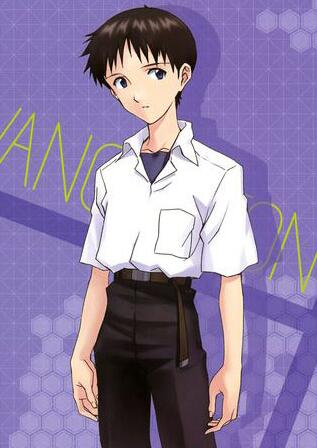
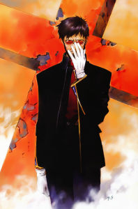
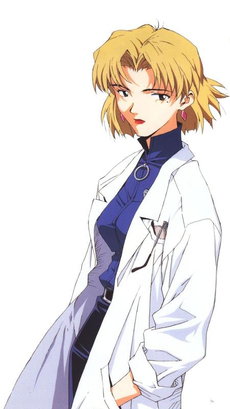

主要成员
返回首页
-

碇真嗣
第三适格者，就读第三新东京市立第一高等学校的17岁少年，同时也是初号机的驾驶员。 三年后的他长高了许多， 而且性格也有很大变化，已经不像14岁的时候一样老是绝望与自卑了，具有责任感和很高的行动力，成长成了连美里也认为是"很棒的男人"，甚至在班上担任班长。彷佛要模仿加持一般的留了长发并束起马尾，虽然个性并没有跟著越来越像加持，但给人的气质上却能感受出那种"可靠"的感觉。
-

绫波丽
绫波丽是《新世纪福音战士》的女主角之一，EVA第一适格者，零号机驾驶员，以往经历、资料被完全抹消。她是以碇唯为原型培养的人造人、拥有莉莉丝的灵魂的人类。 作为在EVA剧中最具神秘色彩的角色，绫波丽过去的资料是一片空白，在使徒来袭的七个月之前即已开始接受驾驶训练，不过却在零号机的启动实验中因意外而身受重伤。所以当丽在剧中第一次登场，便是以全身包裹着绷带的形象出现的（注，漫画版改为在之前与第三使徒的战斗中负伤），这一印象更一举帮助她拿下了“绷带少女”的美誉。 在故事一开始的时候，绫波丽相当内向，彷佛没有情感，也很少与其他人互动，沈默寡言和面无表情便是她最大的特色。无论接到多么苛酷的任务也不会有任何异议，毫不反抗默默地执行。这种对碇源度死心塌地的遵从态度也让她从表面看起来完全是一个“洋娃娃”。 但是丽并非没有感情的，她只是不懂得如何表达而已。随着剧情的发展，绫波丽的内心一步步为观众所了解起来，不再是冷冷的沉默，对真嗣的微笑，对东治的关心，对明日香的劝诫，以及自爆前为自己所哭泣，这些行动一次次打动了观众的心灵，身世之迷也如抽丝剥茧般一点点的呈现在眼前。

渚薰
渚薰是被SEELE直接送来的第五适格者，同时也是第十七使徒自由天使。 他比真嗣稍高一些，手足细长，有着少年期特有的中性性格。淡淡的微笑之下，隐藏着其深不可测的内心。他在出现后不久，就和真嗣建立了一种难以言喻的亲密感。他的言语之间，尽是些直接涉及人生观念的发言。他的真面貌是第十七使徒，也是最后一个使徒自由天使塔布里斯（カヲル，Seventeenth Angel Kaol）。他拥有自由控制与EVA同步率的高强能力,甚至不需要不需要插入拴就能操纵EVA贰号机。体内被注入ADAM灵魂，能产生非常强大的绝对领域，在振动刀下保护自己， SEELE想借其之手除掉已经背叛他们的碇源度，但当渚薰到达NERV地下教条零地点后，发现白色巨人不是ADAM而是LILITH，之后放弃了战斗，面带微笑请求真嗣把自己杀死。真嗣驾驶的初号机手握渚薰，漫长的沉默后，渚薰的生命便如此悲剧落幕。 《新剧场版：破》中驾驶EVA六号机于片尾出场，而在众多EVA相关游戏中，他经常是驾驶EVA肆号机(也就是TV版第17集中因为S2机关失控而消失的机体)。
-

明日香
EVA贰号机的驾驶员，第2适格者，从小在德国长大，性格任性活泼。 她的著名台词“あんたバカ?”(你白痴啊?)曾一度在日本校园中十分流行。关于“明日香”(アスカ，Asuka)的翻译，按照“アスカ”在日文中的读音，作为名字来讲，女一般译为“明日香”，男一般译为“飞鸟”(中国版《新世纪天鹰战士》中的“飞鸟”似乎由此而来，但TV第26话“学园EVA”有出现“明日香”三个汉字)。 在美国长大，拥有四分之三德国、四分之一的日本血统。平时虽然也和真嗣一同上学，但是个在德国已经上到大学的天才少女。她对自己的能力非常自傲，自尊心强、以自我为中心，拥有极强自我意识。 故事中明日香曾向碇真嗣透露自己是试管婴儿;漫画版则表明她是母亲从精子银行中购买后生下来的，自己并不知道父亲是谁，也因此她和母亲产生了一些隔阂。 在旧剧场版及漫画版中，她理解到母亲的一部分藏在贰号机内，心理状态因此恢复。 另外，有关明日香的性格，许多人的意见并不一致，这是因为TV版与漫画版对于她的描绘有出入：TV版中的明日香，是一个活泼好动、直爽但令人很难接近的女孩;而在漫画版中，明日香具有“双重性格”(真嗣语)，在大人面前是一派天真可爱，而在同伴面前(尤其是真嗣)则是一副极其刁蛮泼辣的模样。不过2个版本都具有的是，明日香争强好胜，不喜欢被人超越，更不愿意被命运摆布。 在新剧场版系列中，姓名更改为“式波·明日香·兰格雷(式波・アスカ・ラングレー(しきなみ・アスカ・ラングレー))”，军衔为上尉，来自德国空军;在《新剧场版：Q》中加入以美里为首的反NERV组织WILLE，十四年的时间样貌并未改变，向真嗣表露是因“EVA的诅咒”造成的。继续担纲EVA改2号机的驾驶员。
-

真希波
真希波·真理·伊拉丝多莉亚斯(真希波・マリ・イラストリアス，Makinami Mari Illustrious，声优：坂本真绫) 其他译名：真希波·玛丽·伊兰崔亚斯、真希波·真里·伊拉崔亚斯、真希波·真理·伊勒斯提利亚斯 仅于新剧场版系列登场，于福音战士新剧场版：破首次出场的人物，拥有棕色双马尾(最初人设是紫红色头发)，蓝绿色双瞳，戴着红框板材眼镜，发带是A10神经连接端口。 最初是EVA5号机的适格者，战斗服绿色。后来代替明日香驾驶EVA2号机，战斗服换为粉色， 她是个留着双马尾的乐天派眼镜妹，此外由于非常淡定的表现，似乎显示她对NERV的计划知之甚详。 在《新剧场版：Q》中，虽然已过去了十四年但样貌并无改变，加入了以葛城美里为首的反NERV组织WILLE，驾驶EVA8号机与明日香驾驶EVA改2号机共同作战。 在漫画版第14集中以“真希波真理”之名登场，并提及是碇唯的学妹。漫画中她出现的时间是1998年，那时是16岁，她对成绩优于自己的碇唯怀有好感，最后向碇唯表明心迹，前往英国留学。
-

碇唯
碇源度的妻子，碇真嗣的母亲。碇唯在剧情进行过程中从头到尾都没有亲身露面，却无疑是整个《新世纪福音战士》中最关键的人物之一。 她是优秀的科学家，学生时代于京都大学研究基因工程，也在此认识了老师冬月与她未来的丈夫源度，是E计划的先驱，提出了人造人的理论。在第二次冲击后生下真嗣，却在真嗣3岁时，在2004年的一项试验中消失在EVA初号机中。 她在试验中消失的现象，似乎同真嗣在与十四使徒的战斗中跟初号机融合时一样。但是，当时的援救计划并没有成功。根据目前的可信说法，正是因为碇唯的灵魂已经寄宿于初号机中，才让初号机多次自发行使保护真嗣的行动。
-

碇源堂
碇源堂是NERV司令官，碇真嗣的父亲，也是整个“人类补完计划”和EVA研究计划的负责人。 原姓六分仪，和碇唯结婚后改姓碇。他从年轻时代起就是一个相当神秘的人，在几乎毁灭世界的第二次冲击发生后，他就全力投入研究事件的真相、“使徒”的真面目和其他种种相关的谜题。“人类补完计划”和NERV的成立都跟他有相当深的牵连，曾于2003年国联设立的人工进化研究所担任所长的职务。2010年，成为国联直属的以调查、研究、歼灭使徒为目的的特务机关NERV的司令，也是整个EVA开发计划的总负责人。此外，他亦是被称作“人类补完计划”的机密计划的责任者。 他是个了解SEELE，第二次冲击，EVA等诸多神秘事物内幕的人。形式上，他虽然是受人类补完委员会和Seele的指示在指挥NERV，但是在暗中他有着自己的计划。 他通常戴着一幅深色反光眼镜，让人摸不透他的心思，给人极度神秘的感觉。他的个性冷酷而不择手段，甚至对自己的儿子也从来不闻不问，只是不断下达命令。其实对碇唯有着极深的感情，他一切计划的最大目的可以说就是为了再见到碇唯。
-

冬月耕造
冬月耕造是NERV的副司令，常常在碇源度不在时代替他指挥本部的工作，是源度得力的左右手。 1999年时在京都的大学任副教授，教授“形而上生物学”，在大学里，他遇上了一个优秀的生物工程学学生碇唯。他对碇唯很有好感。同一年，他因为给素未谋面的六分仪源堂指定为其醉酒闹事的保证人而认识了源度。源度亦因此而认识了其学生碇唯，而且两人还开始交往。当他从碇唯口中得知其二人在交往，十分惊讶。他在第二次冲击后调查到了事件的内幕，之后在与源堂的接触里对E计划本身产生了兴趣，他也因此被邀请加入了NERV的前身GEHIRN。 冬月对碇唯似乎存在异于一般师生的感情，他似乎也是最了解碇源堂所酝酿的人类补完计划的人物。于新世纪福音战士剧场版：THE END OF EVANGELION最后接触了碇唯的幻影，化为LCL消失。
-

赤木律子
赤木律子是NERV本部技术开发部技术一课所属，一位十分有能力的女性科学家。 她的母亲是EVA计划的负责人，超级电脑MAGI开发者赤木直子，在母亲去世后，律子继承了母亲的工作，维持MAGI的运作，在NERV中接近于中枢地位，除了碇源度和冬月耕造外，她是唯一完全清楚知道NERV计划的实际目的的NERV成员。 她的性情有些冷淡，而且具有科学家特有的过度理性和神经质。似乎很喜欢猫，同时也喜欢吸烟。她是葛城美里的大学时期结识的朋友，她的性格也和美里形成了鲜明的对比，也认识加持良治。 她的心中也有着不为人知的过去，对母亲的感情非常复杂，一方面她并不喜欢自己的母亲，另外一方面她却在重复着与母亲一样的人生。她像自己的母亲一样也爱上碇源堂，但她随后亦发觉碇源度只是利用她。为了报复，律子破坏了绫波丽的Dummy系统。最后她启动了MAGI的自爆程序，并阻止碇源度发动第三次冲击。但MAGI的CASPER（拥有赤木直子身为女性的人格）否决了律子的指令，她亦被碇源堂射杀了。
-

葛城美里
葛城美里是NERV本部战术作战局第一课所属，作战部长。最初登场时候阶级为一尉，后来升为三佐，是碇真嗣等驾驶员的直属上司。 美里非常关心真嗣他们，因为不忍真嗣一人独自生活而申请他的监护权，并一起生活，后来明日香也入住其宅。性格豪迈爽朗，粗枝大叶，生活习惯也是奇差无比。平时酷爱喝啤酒，在家里随处可见啤酒罐。不擅家务，在真嗣入住后便将一切家务都推给了他。工作上，她经常提出一些风险性极大的作战计划，但大多数情况下都能获得成功。她和赤木律子自学生时代就是要好的朋友，但在工作中似乎有些隔阂,这可从片中两人的数次冲突、以及律子在最终计划中对她的隐瞒可以看出；她和加持是大学时代的情侣，后来分手（美里提出的）。 美里其实是第二次浩劫的唯一生还者，她的父亲在冲击爆发的时候把唯一的救生艇让给了她，自己胸前的伤疤和父亲留下十字项链就是那时留下的全部东西。因为对父亲的爱恨交加，美里后来加入NERV。她想借着不断战胜使徒来逃避自己的羁绊，但是在她内心中，始终无法割舍掉的除了对父亲的情感，还有对加持的爱。 她养了一只叫做“PENPEN"的温泉企鹅做宠物，后来因为第三新东京市半毁，只好寄养给别人
-

加持良治
NERV特殊监察部所属成员，带着明日香，二号机回到日本，但其真正的任务是运送亚当的复原体到NERV本部。 加持、美里和律子自大学时代已经是朋友关系，加持与美里更是恋人，后来一度分手，但在他从德国回到NERV的时候，他与美里再续前缘。虽然美里喜欢他有很大部分是因为他跟美里的父亲很像，但他很乐于接受美里的一切。他的兴趣是在地下都市的空地上种植西瓜。 加持平时是一副不修边幅，邋里邋遢的风流模样，但其实是个对人生有着深刻思考的成熟男性。对于碇真嗣来说，加持良治是真正的心灵的导师，他多次在与真嗣的交流中将人生的哲理教导给他；对于明日香来说，他则是让人憧憬的成熟的男性；而对于葛城美里来素，加持是心中无法挥去的羁绊。他其实具有双重身份，既是NERV特殊监察部成员，也是SEELE派来调查的间谍，他借着这双面间谍的身份不断探究事情的真相。在最后，预感到自己生命即将结束的加持把自己收集到的所有资料交给了美里，慷慨的面对死亡的命运。
-

相田剑介
碇真嗣的同学及好友，与铃原东治是一对形影不离的至交，标准的军事宅。对军事武器，生存游戏和摄影非常着迷，平常就一个人在野外玩生存游戏，一旦有军事设备出现就会拿起摄影机猛拍，甚至请假去看新战舰。亦对EVA有很浓厚的兴趣，最大的愿望是能成为EVA的驾驶员。 知道碇真嗣是EVA驾驶员后十分向往，曾经像美里提出驾驶三号机的申请。 他的个性比较随和，且观察力很好，也比较会与人相处；与东治及真嗣，通常被明日香与洞木称作“白痴三人组”。
-
铃原东治/铃原冬二
碇真嗣的同学，同时也是第四适格者。个性直率，讲起话来常喜欢用满口奇怪的大阪腔，其性格属于先动手后动口的热血型，虽然也是个善良的人，但是却常常不会适当地表达自己的感觉。他与碇真嗣、绫波丽与明日香是第3新东京市立第一中学2年A组的同班同学，与碇真嗣、相田剑介被明日香及班长洞木光并称为“白痴三人组”，也因此常常跟明日香斗嘴。 他非常关心自己的妹妹，最初因为真嗣驾驶的初号机在战斗中造成的破坏导致妹妹受伤而对真嗣恶言相向甚至抱以拳脚；后来在了解了真嗣的感受后消除了成见，两人成为非常好的朋友，亦是美里的崇拜者。表面上和班长洞木光有很深的矛盾，其实相互之间有着不错的感情。 后来他被NERV以转到更好的医院医治他妹妹作为代价而被找去驾驶从美国的NERV第二支部强制运送过来的EVA参号机。然而不幸的是，由于第十三使徒的入侵三号机遭到侵蚀，东治也可悲的成为被傀儡系统控制的初号机的牺牲品，在动画里他失去了左脚，在漫画里则失去了生命。 新剧场版中，他没有担任三号机的驾驶员，而是去接自己妹妹出院后，便只在第十使徒攻击的时候，出现他和同班同学一起逃向避难所的画面。
-
洞木光
真嗣的同学，也是2年A班的班长，和明日香是好朋友。两人一起把真嗣，东治和剑介三人称为“白痴三人组”。 洞木光是个是个坚强的女孩，也是很有责任感的班长，相当受班上同学信赖，且擅长家务，时而强韧时而温柔的她一直暗恋东治，在东治前往松代进行三号机实验的时候洞木为他制作了便当，然而因为十三使徒的事故，便当没能交给东治。在动画版里，洞木在事件后决心照顾因受伤而失去左脚的东治，漫画版则因东治之死而讨厌起真嗣来。是个坚强的女孩。